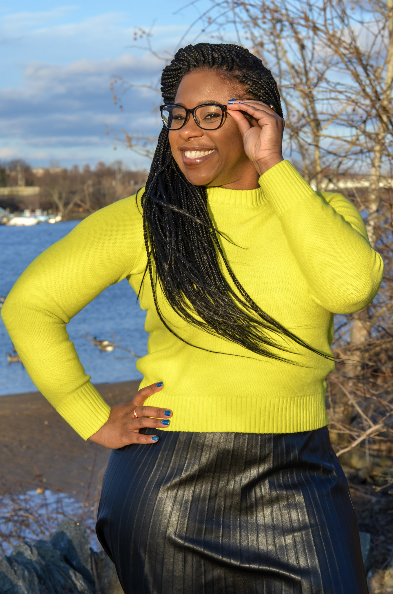
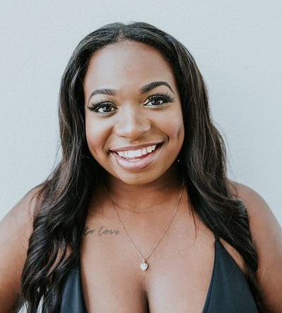

Profiles of
Black Marine Scientists
→ A-F ←
Check out #BIMSRollCall!
Salma Abdel-Raheem LinkedIn

Favorite Publication: Abdel-Raheem & Allen (2019) Developmental Consequences of Temperature and Salinity Stress in the Sand Dollar Dendraster excentricus.
Salma Abdel-Raheem is the Sightings Network Coordinator at The Whale Museum in Friday Harbor, WA.
In the paper above, Abdel-Raheem & Allen highlight the work of E.E. Just from the early 1900s, who was the only African American developmental biologist that Abdel-Raheem came across in her literature review. He was one of two researchers who described the potential for the developmental phenomena that Abdel-Raheem studied for her undergraduate honors thesis. Mentions of his work was virtually absent in the modern literature - something that likely would not have been the case if he were a white researcher.
“Tough times don’t last, tough people do.” Lately I’ve been feeling like the tough times are never-ending and so it’s a good reminder to persevere. Finding a community would definitely help make people tougher than the times."
Stanton Belford
Favorite Publication: Belford, S.G. et al. (2019). Biodiversity of Coral Reef Communities in Marginal Environments along the North-Eastern Coast of Trinidad, Southern Caribbean.
"Seek out your Success, when Others Fail to Give you a Chance."
Yessenia Becerra Twitter
Favorite Publication: Pennisi (2010) In the Deep Blue Sea.
Yessenia is an undergrad biology major who studies black corals with the rest of my deep sea lab team at the University of South Carolina, Beaufort.
"How do we succeed in an unfair world? We work twice as hard for half the credit; we make ourselves unavoidable through our diligent, impressive work; but most importantly, we lift each other up. Can’t wait to see y’all shine."
Miranda Bernard Twitter Instagram
Miranda Bernard is a PhD candidate in Environmental Life Sciences at Arizona State University. As a marine social scientist, she is interested in understanding the ways in which marine conservation interventions can equitably exist in the face of anthropogenic and climate changes.
"When times are hard, do something. If it works, do it some more. If it does not work, do something else. But keep going.” - Audre Lorde
"Science is always shaped by the time and the place it is carried out in. And ultimately it is at the mercy of the personal political beliefs of those carrying it out...Scientists are socialized human beings who live within society, and their ideas are social constructions." - Angela Saini
Salome Buglass
Favorite Publications:
"It's so great to know so many of you are out there & love the big blue too! let's collaborate! I Can't wait to physically meet, swim and dive with many of you, once this pandemic is over"!
Ruleo Camacho
Favorite Publication: Camacho et al. (2020) Status of coral reefs in Antigua & Barbuda: using data to inform management
Ruleo Camacho is a Marine Ecologist from Antigua and Barbuda and currently works for the National Park Authority.
"We need to change the stigma that turns away black people from pursuing marine science. Too often I've been told that I do not look like a marine scientist."
Dr. Emily Choy

Favorite Publication: Choy et al. (2019) Body condition impacts blood and muscle oxygen storage capacity of free-living beluga whales (Delphinapterus leucas).
Dr. Emily Choy is an Arctic marine biologist.
"Push forward & push further! Let your passion for science drive your curiosity to plumb the depths of knowledge and allow your imagination to soar! Our time is now!"
Antoinette Clemson
Favorite Publication: Organ et al. (2006) Thinking Like a Manager: Reflections on Wildlife Management
Antoinette Clemson is a fisheries biologist at New York Sea Grant/Cornell University.
My father’s words of wisdom to my more rebellious self (paraphrased): “Never let anyone tell you that your gender precludes you from certain occupations – you can do any job you want to do.”
Nick Coleman

Favorite Black Scientist: Dr. Daniel Pauly
"I am so excited to interact with other #BlackinMarineScience participants and see all the black excellence on my timeline. Let's continue to change the tide and rise on some Maya Angelou vibes."
Tiffany Crawford

Favorite Publication: Diaz, R.J. & Solow, A. (1999) Ecological and economic consequences of hypoxia: Topic 2 Report for the Integrated Assessment on Hypoxia in the Gulf of Mexico
Tiffany Crawford grew up in Pikesville, Maryland, and developed a fascination with the ocean, and all things marine at an early age. Tiffany’s parents supported and strongly encouraged her pursuit of a career as a marine biologist, and in becoming the first “female Jacques Cousteau”. Tiffany earned a bachelor’s degree in marine science at Coastal Carolina University and a master’s degree in environmental policy at Drexel University. While at Coastal, Tiffany gained her open water certification for SCUBA diving. Tiffany’s education and research experience helped to refine her career goals and shift her focus from ocean exploration to ocean conservation. Tiffany officially began her career as an environmental scientist with the US Environmental Protection Agency (EPA) in 2002. During her 18 year career at EPA, Tiffany has worked in on a variety of water quality projects and regulations including the development and state adoption of numeric water quality standards for the Chesapeake Bay, state implementation of the Beaches Environmental Assessment and Coastal Health (BEACH) Act, and carried leading and key roles in high priority issues like the Numeric Nutrient Criteria Development for Florida Waters, and the 2015 Clean Water Rule. Seeking additional opportunities for growth and development, in 2019 Tiffany served as a Brookings LEGIS Fellow in the office of United States Senator Mazie K. Hirono, where her knowledge and skills were broadly applied at the congressional level. During this time, she also gained first-hand knowledge of congressional operations; including oversight of the executive branch. Now back at EPA, Tiffany serves as a water policy advisor on matters of agency and congressional oversight. Tiffany remains an avid SCUBA diver, and constantly seeks new opportunities to expand her reach as an ocean advocate.
“I am my ancestor’s wildest dream”
Dr. Jeanette Davis
Dr. Jeanette Davis is a Marine Microbiologist, adjunct professor, and author of the best-selling children's book Science is Everywhere, Science is for Everyone created to explore and diversify science. She's a proud native of Delaware and her Ph.D. research focused on bacteria associated with tropical sea slugs to find new medicines from the ocean. She is cited in Science for helping to discover a marine bacterium the fights cancer. Davis attributes her success to the strong foundation that she received at her "home by the sea", Hampton University. Davis has been featured in several prominent black magazines including Essence and Black Enterprise as "the next great marine biologist". She currently works in government as an ocean policy advisor where she advocates for strong science to manage ocean resources.
April Ellis
 "No matter what people tell you and no matter how hard it may be in this predominantly white field; YOU CAN DO THIS! Use that negative energy and turn it into drive. Trust me, it will prove to help you succeed even further than you thought."
Dr. Dijanna Figueroa
 Dijanna Figueroa has made a career of exploring the mysteries of the deep. Dr. Figueroa holds a bachelor’s degree in Marine Biology from UCLA and a PhD in Marina Science from UC Santa Barbara. She was featured in James Cameron’s documentary Aliens of the Deep, which follows Cameron and NASA scientists as they explore the some of the deepest parts of the ocean and learn about the unique life forms that inhabit those spaces. Her research on the thermal physiology of hydrothermal vent animals was featured in the film. Recently, Figueroa has become an advocate for STEAM education—adding art and design to the science, technology, engineering, and math equation. She’s spent more than two decades teaching STEAM to grades K–8, formerly served as global director of the Muse School National Geographic Society’s Green STEAM program and has advisory roles with many STEM/STEAM nonprofits. She was recently featured on MTV’s Women Crush Wednesdays Women in STEM series. She currently teaches middle school science at St. Matthew's Parish School and runs programs that teach students how to fly drones, scuba dive and build underwater robots. If that isn’t enough, Figueroa is the director of the Lucas Scholars STEM program, a community based social justice and equity program designed to engage young people in science, engineering, design, and art. She loves the ocean and is committed to making ocean science accessible to all people.
Dijanna Figueroa has made a career of exploring the mysteries of the deep. Dr. Figueroa holds a bachelor’s degree in Marine Biology from UCLA and a PhD in Marina Science from UC Santa Barbara. She was featured in James Cameron’s documentary Aliens of the Deep, which follows Cameron and NASA scientists as they explore the some of the deepest parts of the ocean and learn about the unique life forms that inhabit those spaces. Her research on the thermal physiology of hydrothermal vent animals was featured in the film. Recently, Figueroa has become an advocate for STEAM education—adding art and design to the science, technology, engineering, and math equation. She’s spent more than two decades teaching STEAM to grades K–8, formerly served as global director of the Muse School National Geographic Society’s Green STEAM program and has advisory roles with many STEM/STEAM nonprofits. She was recently featured on MTV’s Women Crush Wednesdays Women in STEM series. She currently teaches middle school science at St. Matthew's Parish School and runs programs that teach students how to fly drones, scuba dive and build underwater robots. If that isn’t enough, Figueroa is the director of the Lucas Scholars STEM program, a community based social justice and equity program designed to engage young people in science, engineering, design, and art. She loves the ocean and is committed to making ocean science accessible to all people.
Ashlyn Ford
Favorite Publication: Maynard et al. (2015) Projections of climate conditions that increase coral disease susceptibility and pathogen abundance and virulence.
Ashlyn is a PhD student at UCLA studying Ecology and Evolutionary Biology. More specifically her research involves assessing the health of marine ecosystems and evaluating how infectious diseases are impacting different aspects of marine communities. She received her BS in Environmental Science at Florida Agricultural and Mechanical University in 2017.
"Few will have the greatness to bend history itself; but each of us can work to change a small portion of events, and in the total; of all those acts will be written the history of this generation.” -Robert Kennedy
- © 2020
- Design: HTML5 UP